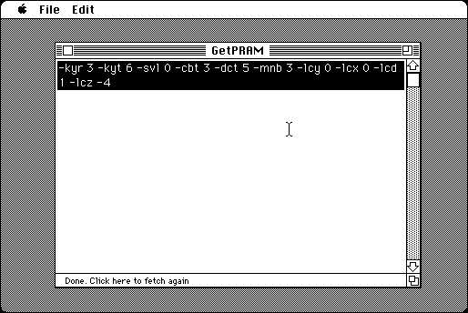

Download
getpram-1.0.0.zip (info) a zipped hfs disk image and checksum file. The disk image can be mounted with Mini vMac. Includes source code.
GetPRAM is a tool for getting Parameter RAM settings in a text format, a list of options for the Mini vMac build system or the Variations Service (Text Based).

To use, first use the Macintosh Control Panels to select the desired settings, then launch the GetPRAM application, and the output appears in a window, selected. You can choose the “Copy” command in the Edit Menu to save the output.
Alternatively, when GetPRAM is run inside Mini vMac, you can get text out of the emulated Macintosh using the “Host Copy” command in the Edit Menu. It is like the “Copy” command, except that it uses the clipboard of the real computer instead of the clipboard of the emulated computer. The keyboard shortcut is Command-Option-C. (The “Host Copy” command has similar effect to using the normal “Copy” command and then ClipOut.)
If you change settings with the Macintosh Control Panels, you can tell GetPRAM to fetch the current settings by clicking on the status bar, at the bottom of the window below the editing area. (Choosing the ‘Go’ command from the File menu, will also work.) Quitting GetPRAM and relaunching also has the same effect.
See the Compiling page for instructions on compiling GetPRAM from the source code.
You can redistribute GetPRAM and/or modify it under the terms of version 2 of the GNU General Public License as published by the Free Software Foundation. See the included file COPYING.
GetPRAM is distributed in the hope that it will be useful, but WITHOUT ANY WARRANTY; without even the implied warranty of MERCHANTABILITY or FITNESS FOR A PARTICULAR PURPOSE. See the license for more details.
:
If you find GetPRAM useful, please consider helping the Gryphel Project, of which it is a part.